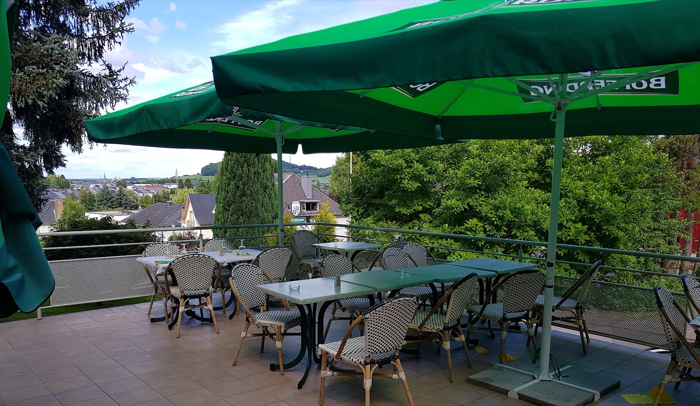
Aal Kayl
À table, dans la vallée.
Pizze, pâtes et grillades italiennes — servies sur une terrasse ouverte sur la vallée boisée du vieux Kayl.
Une table italienne au creux du vieux Kayl.
On vient d'abord pour la terrasse : les tables sous les parasols, la lumière qui tombe entre les arbres, et la vallée boisée qui descend juste en contrebas.
C'est le décor qui revient le plus souvent dans les avis — un coin d'ombre verte à deux pas du village, où l'on s'attarde volontiers après le déjeuner.
Dans l'assiette, une cuisine italienne franche : pizze, pâtes, grillades et poissons, servis dans une salle claire en lin blanc et bois chaud.
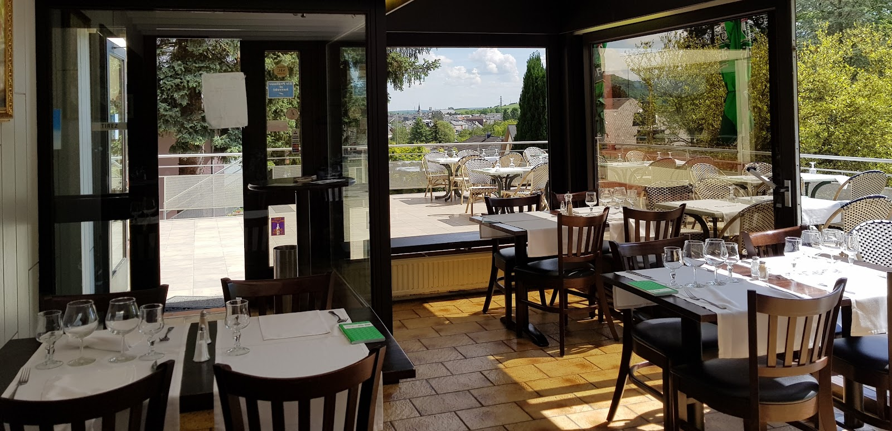
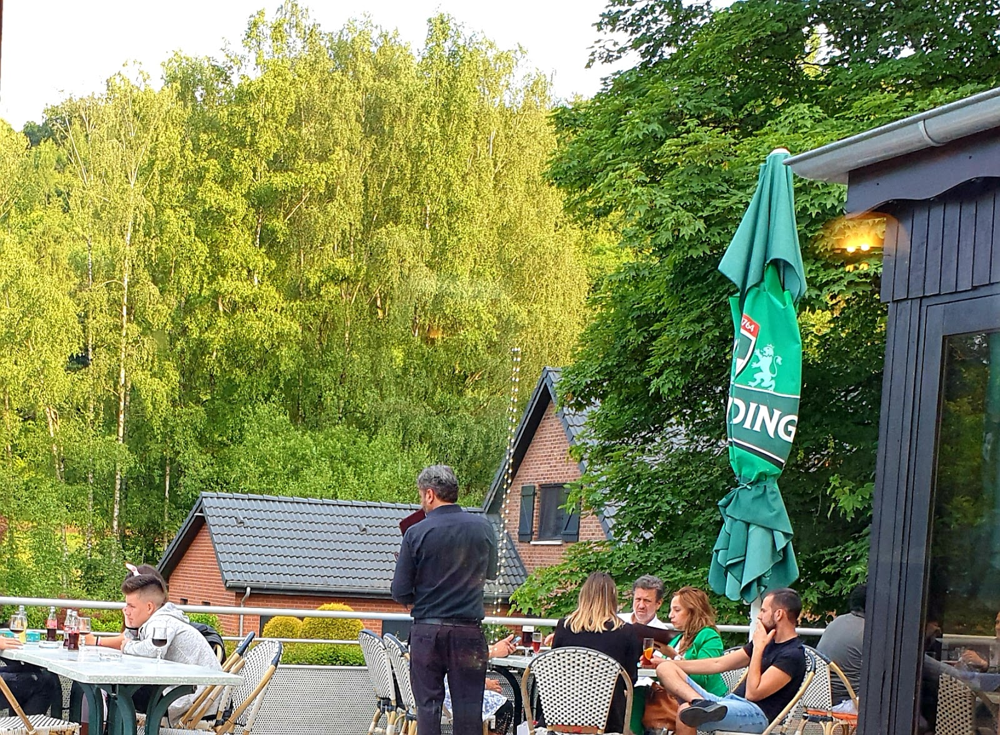
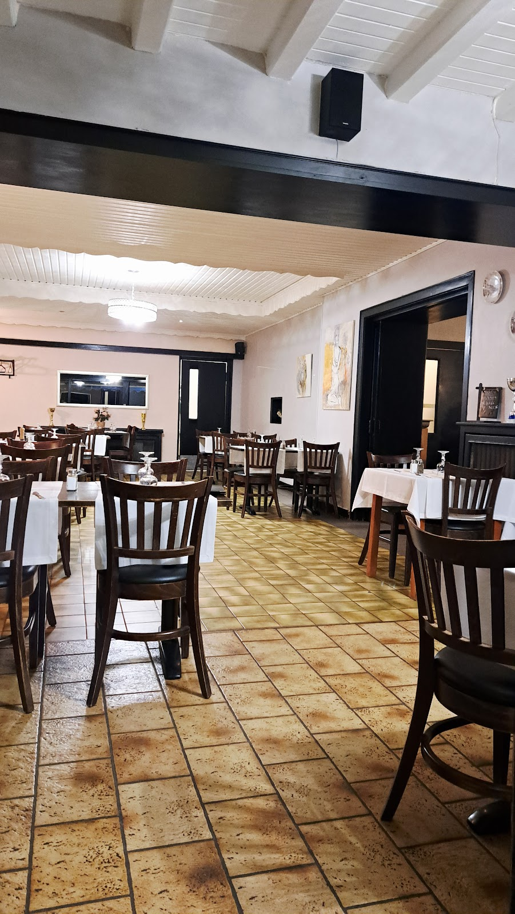
Pizze, pâtes, grillades.
Une sélection de la maison. Menu du jour le midi ; carte complète servie en salle.
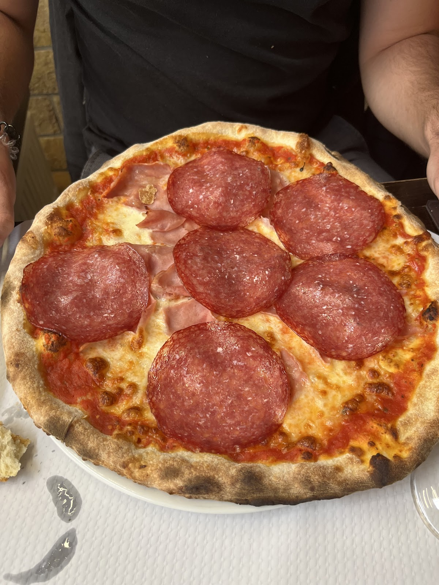
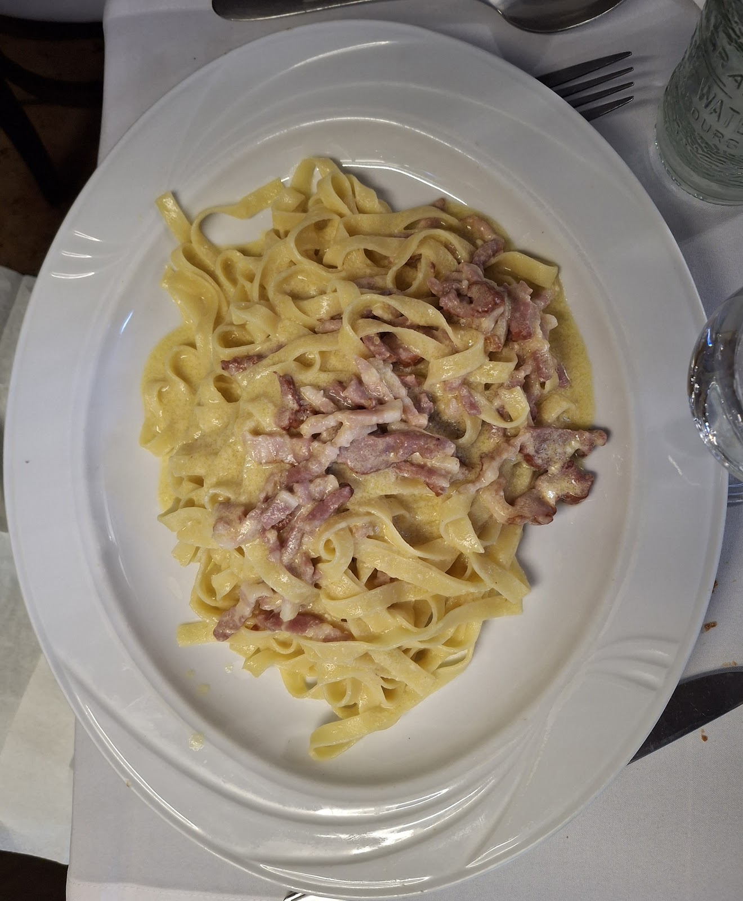
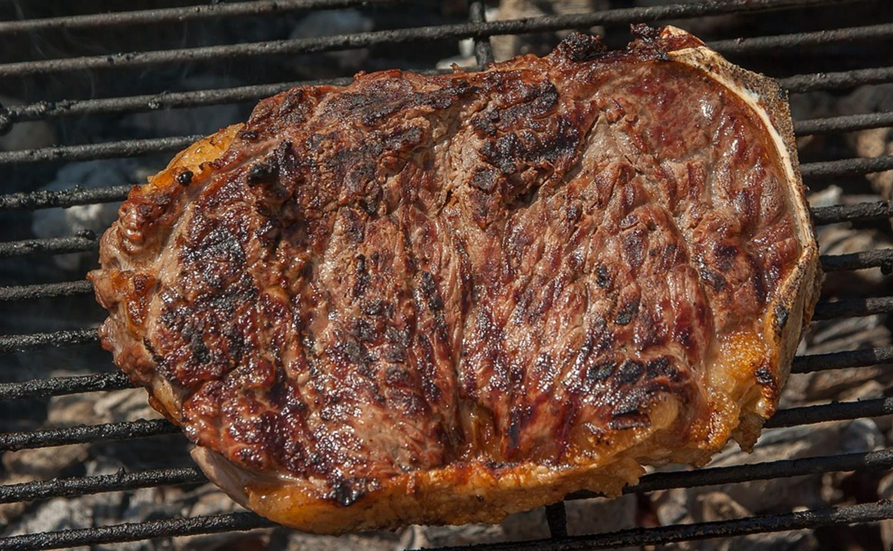
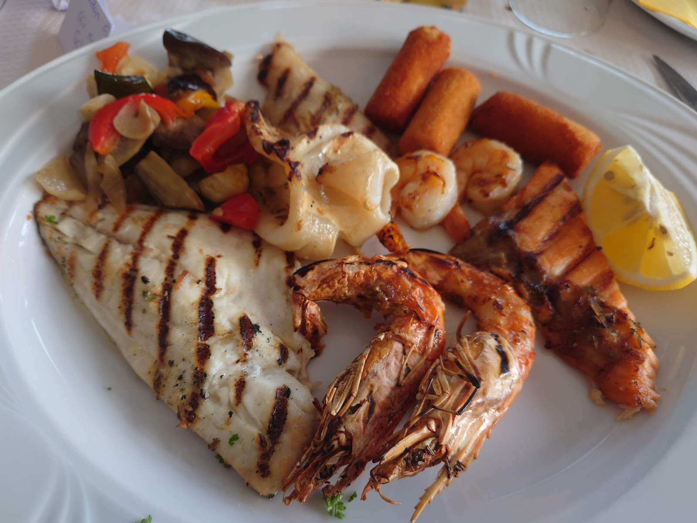
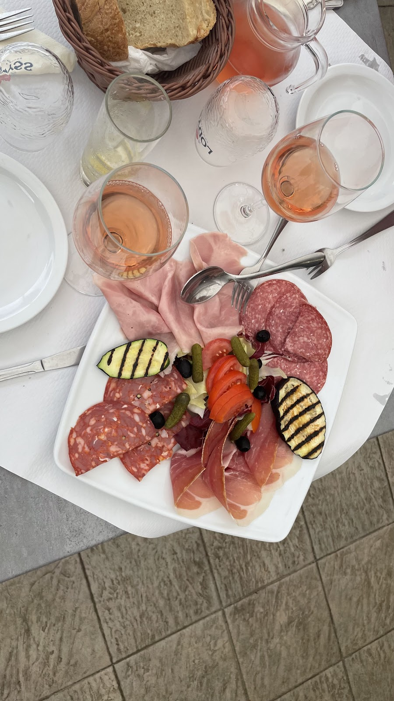
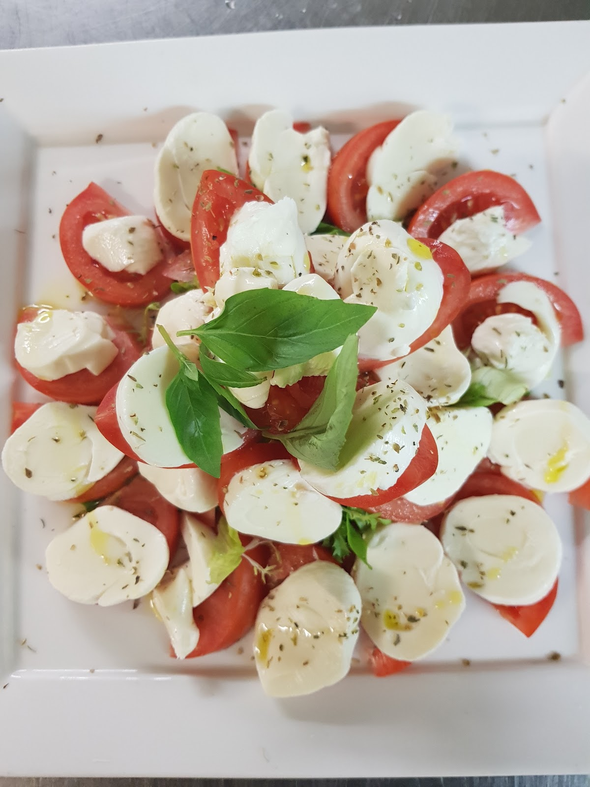
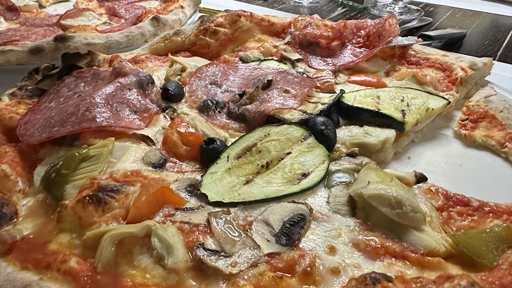
Menu du jour, desserts et digestifs : prix confirmés. Plats à la carte : prix en salle — sélection donnée à titre indicatif.
Au bord de la vallée, à Kayl.
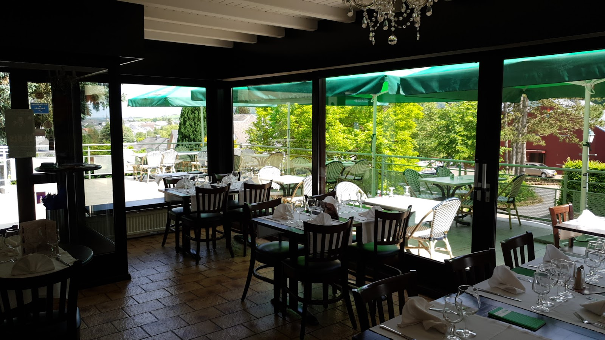